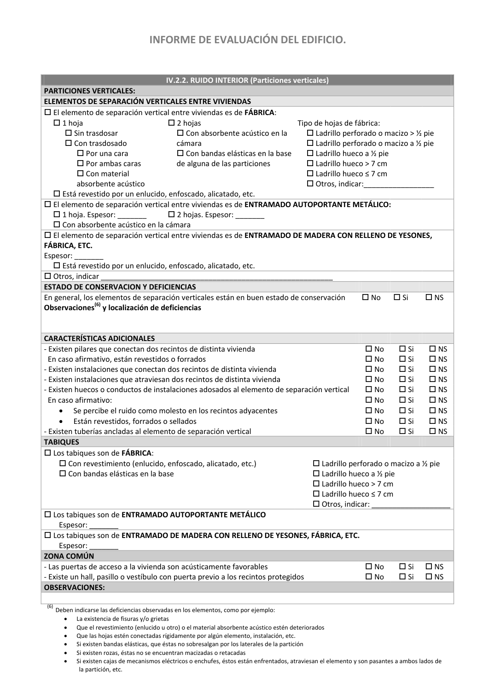

<!doctype html>
<html lang="es"><head><meta charset="utf-8">
<meta name="viewport" content="width=device-width, initial-scale=1">
<title>GUIA · PARTE IV: CONDICIONES BÁSICAS DE PROTECCIÓN FRENTE AL RUIDO USO RESIDENCIAL VIVIENDA:</title><link rel="stylesheet" href="../estilo.css">
</head><body>
<nav><a href="../index.html">Índice</a> › <a href="../doc/guia-pdf-a5d4ef5252ba-2016-11-01-813669d3066c.html">GUIA</a> › a0031</nav>

<header class="meta">
<p><a href="../doc/guia-pdf-a5d4ef5252ba-2016-11-01-813669d3066c.html">GUIA</a> · PARTE IV: CONDICIONES BÁSICAS DE PROTECCIÓN FRENTE AL RUIDO USO RESIDENCIAL VIVIENDA: · versión 2016-11-01 · capa guia</p>
</header>
<div class="cita"><strong>Cita:</strong> GUIA · ID técnico a0031 · PARTE IV: CONDICIONES BÁSICAS DE PROTECCIÓN FRENTE AL RUIDO USO RESIDENCIAL VIVIENDA: · páginas físicas pág. 42-44 (impresas: [None, None, None])</div>
<p>Formatos: <a href="../../contenido/docs/GUIA-PDF-a5d4ef5252ba/2016-11-01__813669d3066c/apartado/a0031__parte-iv-condiciones-basicas-de-proteccion-frente-al-rui.json">JSON compacto</a> · <a href="../../contenido/docs/GUIA-PDF-a5d4ef5252ba/2016-11-01__813669d3066c/apartado/a0031__parte-iv-condiciones-basicas-de-proteccion-frente-al-rui.md">Markdown</a> · <a href="../../contenido/docs/GUIA-PDF-a5d4ef5252ba/2016-11-01__813669d3066c/fuente.pdf">PDF fuente</a></p>
<p><a href="../doc/guia-pdf-a5d4ef5252ba-2016-11-01-813669d3066c.html">Ámbito del documento</a> · <a href="../doc/guia-pdf-a5d4ef5252ba-2016-11-01-813669d3066c.html#ambito">texto del ámbito</a> ·
<a href="../doc/guia-pdf-a5d4ef5252ba-2016-11-01-813669d3066c.html">documento y tablas</a></p>
<nav><a href="guia-pdf-a5d4ef5252ba-2016-11-01-813669d3066c__a0030.html">← INFORME DE EVALUACIÓN DEL EDIFICIO.</a> <a href="guia-pdf-a5d4ef5252ba-2016-11-01-813669d3066c__a0032.html">INFORME DE EVALUACIÓN DEL EDIFICIO. →</a></nav>
<h1>PARTE IV: CONDICIONES BÁSICAS DE PROTECCIÓN FRENTE AL RUIDO USO RESIDENCIAL VIVIENDA:</h1>
<p>Tipo: referencias, formulas, tablas, figuras · nivel 3 · sección estimada: Anejo 1. Parte IV del Informe de Evaluación del Edificio · padre: a0029</p>
<pre class="literal">PARTE IV: CONDICIONES BÁSICAS DE PROTECCIÓN FRENTE AL RUIDO USO RESIDENCIAL VIVIENDA:
USO RESIDENCIAL VIVIENDA:
IV.0. INTRODUCCIÓN
El apartado de Protección frente al Ruido (DB HR) del Informe de Evaluación del Edificio (IEE) consiste en una evaluación
preliminar de las condiciones acústicas de un edificio existente. Si bien el IEE realiza un informe general acerca del
estado del edificio, el estudio de las prestaciones acústicas no puede generalizarse a nivel de edificio completo pues la
acústica del edificio no es un problema global sino que va ligado a las características tanto geométricas como
constructivas de cada vivienda y recinto individual. Las exigencias de aislamiento acústico se establecen sobre recintos
concretos y dependen del tipo de colindancia que exista con los demás recintos del edificio.
El IEE plantea una serie de cuestiones desde el punto de vista acústico sobre la distribución de los recintos dentro de la
vivienda y en relación a otras viviendas, zonas comunes y otros recintos del edificio. Otras cuestiones son relativas a la
tipología de elementos constructivos, a las deficiencias acústicas que puedan presentar y a las instalaciones del edificio.
Muchas de estas cuestiones no van a ser detectables en una inspección visual preliminar; sin embargo, son un indicativo
de aquellos puntos críticos que son determinantes en la acústica de edificios y que pueden y deben tenerse en cuenta
en una situación futura si se aborda una rehabilitación acústica del edificio o si se acusa un problema existente de ruido,
ya que pueden utilizarse como guión o lista de chequeo a seguir durante las intervenciones o pueden ser unas
indicaciones útiles para diagnosticar dicho problema de ruido.
Para poder realizar una valoración de las prestaciones acústicas de un edificio existente, es fundamental que el técnico
realice un estudio de cuáles son las vías de transmisión del ruido existentes y localice aquéllas que pueden ser
dominantes en el comportamiento acústico final de los recintos.
Por otra parte, existen una serie de pruebas de diagnosis acústica que pueden realizarse al margen de lo indicado en el
IEE. Por ejemplo, ensayos de aislamiento acústico, cuestionarios de confort acústico, etc.
En los apartados siguientes se dan una serie de indicaciones que ayudan a cumplimentar los apartados de acústica del
Informe de Evaluación del Edificio. Esta información puede completarse consultando otros documentos de apoyo
desarrollados para la aplicación del DB HR como son la Guía de Aplicación del DB HR y la Guía de Rehabilitación.
El contenido de “Condiciones básicas de Protección frente al Ruido” del IEE se aplica en el caso de uso residencial
vivienda.
IV.1. DATOS GENERALES DEL EDIFICIO (Según CTE-DB-HR)(1)
Localización del edificio
- Tipo de área acústica en la que se ubica el edificio:
- Índice de ruido día, Ld de la zona o de las fachadas del edificio:
- Si no está disponible el valor de los mapas de ruido:
•
Indicar el valor del objetivo de calidad acústica según RD 1367/2007: ___________
•
Indicar el valor obtenido de un estudio específico: ___________________________
- El edificio se encuentra en una zona con ruido exterior dominante de aeronaves, tal como
en la huella acústica de un aeropuerto
 No
 Si
 NS(2)
- Existen fachadas de patios de manzana cerrados, patios interiores o fachadas exteriores en
entornos tranquilos no expuestas directamente al ruido de automóviles, aeronaves, de
actividades industriales, comerciales o deportivas.
 No
 Si
 NS
Distribución de la vivienda
- Los recintos protegidos en el edificio
•
Colindan con otros recintos protegidos de otras viviendas
 No
 Si
 NS
•
Colindan con recintos habitables de otras viviendas
 No
 Si
 NS
•
Colindan con recintos de instalaciones o actividad
 No
 Si
 NS
•
Colindan con un ascensor
 No
 Si
 NS
•
Colindan con zona común
 No
 Si
 NS
- Existen recintos de instalaciones o de actividad en el edificio
 No
 Si
 NS
En caso afirmativo:
•
Colindan con recintos habitables
 No
 Si
 NS
•
Colindan con zonas comunes
 No
 Si
 NS
OBSERVACIONES:
(1) Los datos reflejados en este apartado son complementarios a los indicados en la Parte “Datos generales del Edificio”
(2) NS: Se desconoce

INFORME DE EVALUACIÓN DEL EDIFICIO.
IV.2. CONDICIONES DE PROTECCIÓN FRENTE AL RUIDO (Según CTE-DB-HR)
IV.2.1. RUIDO EXTERIOR
ELEMENTOS CONSTRUCTIVOS:
FACHADAS
LIGERAS: Madera, panel sándwich, ventilada ligera, etc.
PESADAS: Fachada con al menos una hoja de fábrica u hormigón de al menos 135 kg/m2
CUBIERTAS
LIGERAS: Madera, panel sándwich, etc.
 Dispone de un techo suspendido con material absorbente acústico
 No  Si
 NS
PESADAS: El soporte resistente es un forjado o losa de hormigón
VENTANAS Y LUCERNARIOS
 Sencillas
 Dobles
Vidrios
 Acristalamiento simple
 Acristalamiento doble
 Acristalamiento triple
 Vidrios laminados
Sistema de apertura
 Correderas
 Abatibles y oscilobatientes
 Fijo
Localización de los tipos de ventanas(3):
CAPIALZADOS
- Existen capialzados
 No
 Si
 NS
En caso afirmativo, indique:
•
Existen capialzados no prefabricados con tapa interior registrable
 No
 Si
 NS
•
El capialzado dispone de aislamiento acústico en el interior
 No
 Si
 NS
AIREADORES
- Existen aireadores en las ventanas o en la fachada
 No
 Si
 NS
En caso afirmativo, los aireadores disponen de aislamiento acústico
 No
 Si
 NS
CARACTERÍSTICAS ADICIONALES
Se percibe ruido como molesto procedente del exterior
 No
 Si
 NS
ESTADO DE CONSERVACION Y DEFICIENCIAS
- En general:
•
Las fachadas están en buen estado de conservación
 No
 Si
 NS
•
Las cubiertas están en buen estado de conservación
 No
 Si
 NS
•
Las ventanas y lucernarios están en buen estado de conservación
 No
 Si
 NS
•
Los capialzados están en buen estado de conservación
 No
 Si
 NS
Observaciones(4) y localización de deficiencias(5)
OBSERVACIONES:
(3) La localización de los diferentes tipos de ventanas sólo es relevante en aquellos casos en los que distintas fachadas estén expuestos a niveles de
ruido exterior (Ld) diferentes y también para localizar las ventanas más desfavorables.
(4) Deben indicarse las deficiencias observadas en los elementos, como por ejemplo:
•
Las carpinterías muestran signos de deterioro, holguras, huecos, fisuras, deformaciones, pérdida de sellado
•
El capialzado está deteriorado o es poco estanco
•
En el capialzado existe excesiva holgura (&gt; 10mm ) al recoger la persiana
(5) No es necesario rellenar si las deficiencias son generalizadas en todo el edificio. Rellénese para destacar alguna deficiencia aislada relevante.

INFORME DE EVALUACIÓN DEL EDIFICIO.
IV.2.2. RUIDO INTERIOR (Particiones verticales)
PARTICIONES VERTICALES:
ELEMENTOS DE SEPARACIÓN VERTICALES ENTRE VIVIENDAS
 El elemento de separación vertical entre viviendas es de FÁBRICA:
 1 hoja
 Sin trasdosar
 Con trasdosado
 Por una cara
 Por ambas caras
 Con material
absorbente acústico
 2 hojas
 Con absorbente acústico en la
cámara
 Con bandas elásticas en la base
de alguna de las particiones
Tipo de hojas de fábrica:
 Ladrillo perforado o macizo &gt; ½ pie
 Ladrillo perforado o macizo a ½ pie
 Ladrillo hueco a ½ pie
 Ladrillo hueco &gt; 7 cm
 Ladrillo hueco ≤ 7 cm
 Otros, indicar:_________________
 Está revestido por un enlucido, enfoscado, alicatado, etc.
 El elemento de separación vertical entre viviendas es de ENTRAMADO AUTOPORTANTE METÁLICO:
 1 hoja. Espesor: _______
 2 hojas. Espesor: _______
 Con absorbente acústico en la cámara
 El elemento de separación vertical entre viviendas es de ENTRAMADO DE MADERA CON RELLENO DE YESONES,
FÁBRICA, ETC.
Espesor: _______
 Está revestido por un enlucido, enfoscado, alicatado, etc.
 Otros, indicar ________________________________________________________
ESTADO DE CONSERVACION Y DEFICIENCIAS
En general, los elementos de separación verticales están en buen estado de conservación
 No
 Si
 NS
Observaciones(6) y localización de deficiencias
CARACTERÍSTICAS ADICIONALES
- Existen pilares que conectan dos recintos de distinta vivienda
 No
 Si
 NS
En caso afirmativo, están revestidos o forrados
 No
 Si
 NS
- Existen instalaciones que conectan dos recintos de distinta vivienda
 No
 Si
 NS
- Existen instalaciones que atraviesan dos recintos de distinta vivienda
 No
 Si
 NS
- Existen huecos o conductos de instalaciones adosados al elemento de separación vertical
 No
 Si
 NS
En caso afirmativo:
 No
 Si
 NS
•
Se percibe el ruido como molesto en los recintos adyacentes
 No
 Si
 NS
•
Están revestidos, forrados o sellados
 No
 Si
 NS
- Existen tuberías ancladas al elemento de separación vertical
 No
 Si
 NS
TABIQUES
 Los tabiques son de FÁBRICA:
 Con revestimiento (enlucido, enfoscado, alicatado, etc.)
 Con bandas elásticas en la base
 Ladrillo perforado o macizo a ½ pie
 Ladrillo hueco a ½ pie
 Ladrillo hueco &gt; 7 cm
 Ladrillo hueco ≤ 7 cm
 Otros, indicar: ___________________
 Los tabiques son de ENTRAMADO AUTOPORTANTE METÁLICO
Espesor: _______
 Los tabiques son de ENTRAMADO DE MADERA CON RELLENO DE YESONES, FÁBRICA, ETC.
Espesor: _______
ZONA COMÚN
- Las puertas de acceso a la vivienda son acústicamente favorables
 No
 Si
 NS
- Existe un hall, pasillo o vestíbulo con puerta previo a los recintos protegidos
 No
 Si
 NS
OBSERVACIONES:
(6)Deben indicarse las deficiencias observadas en los elementos, como por ejemplo:
•
La existencia de fisuras y/o grietas
•
Que el revestimiento (enlucido u otro) o el material absorbente acústico estén deteriorados
•
Que las hojas estén conectadas rígidamente por algún elemento, instalación, etc.
•
Si existen bandas elásticas, que éstas no sobresalgan por los laterales de la partición
•
Si existen rozas, éstas no se encuentran macizadas o retacadas
•
Si existen cajas de mecanismos eléctricos o enchufes, éstos están enfrentados, atraviesan el elemento y son pasantes a ambos lados de
la partición, etc.</pre>
<h2>Referencias detectadas</h2><ul><li>DB HR</li><li>DB-HR</li><li>RD 1367/2007</li></ul><h2>Tablas en estas páginas</h2><ul><li>p. 42 · <a href="../../contenido/docs/GUIA-PDF-a5d4ef5252ba/2016-11-01__813669d3066c/tabla/p0042_t01.json">p0042_t01.json</a> · <a href="../../contenido/docs/GUIA-PDF-a5d4ef5252ba/2016-11-01__813669d3066c/tabla/p0042_t01.csv">.csv</a></li><li>p. 42 · <a href="../../contenido/docs/GUIA-PDF-a5d4ef5252ba/2016-11-01__813669d3066c/tabla/p0042_t02.json">p0042_t02.json</a> · <a href="../../contenido/docs/GUIA-PDF-a5d4ef5252ba/2016-11-01__813669d3066c/tabla/p0042_t02.csv">.csv</a></li><li>p. 43 · <a href="../../contenido/docs/GUIA-PDF-a5d4ef5252ba/2016-11-01__813669d3066c/tabla/p0043_t01.json">p0043_t01.json</a> · <a href="../../contenido/docs/GUIA-PDF-a5d4ef5252ba/2016-11-01__813669d3066c/tabla/p0043_t01.csv">.csv</a></li><li>p. 44 · <a href="../../contenido/docs/GUIA-PDF-a5d4ef5252ba/2016-11-01__813669d3066c/tabla/p0044_t01.json">p0044_t01.json</a> · <a href="../../contenido/docs/GUIA-PDF-a5d4ef5252ba/2016-11-01__813669d3066c/tabla/p0044_t01.csv">.csv</a></li></ul><h2>Página visual</h2><figure><a href="../../contenido/docs/GUIA-PDF-a5d4ef5252ba/2016-11-01__813669d3066c/figura/p0042.png"></a><figcaption>Página visual 42 (fuente para fórmulas/tablas/figuras)</figcaption></figure><figure><a href="../../contenido/docs/GUIA-PDF-a5d4ef5252ba/2016-11-01__813669d3066c/figura/p0043.png"></a><figcaption>Página visual 43 (fuente para fórmulas/tablas/figuras)</figcaption></figure><figure><a href="../../contenido/docs/GUIA-PDF-a5d4ef5252ba/2016-11-01__813669d3066c/figura/p0044.png"></a><figcaption>Página visual 44 (fuente para fórmulas/tablas/figuras)</figcaption></figure><p class="aviso">PDF fuente redistribuible: copia fiel enlazada en esta página (SHA256 verificado).</p>
<footer>Generado estáticamente desde JSON normalizado; sin JavaScript ni servicios externos.
El JSON es la fuente; este HTML es caché reproducible.</footer>
</body></html>
